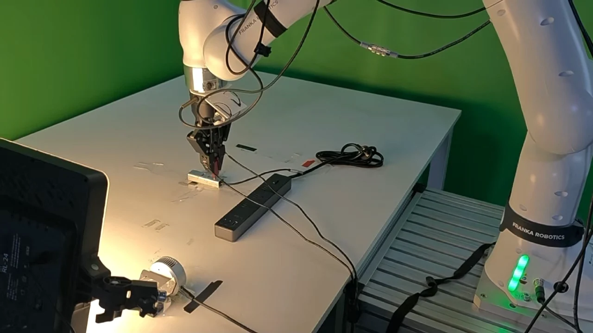
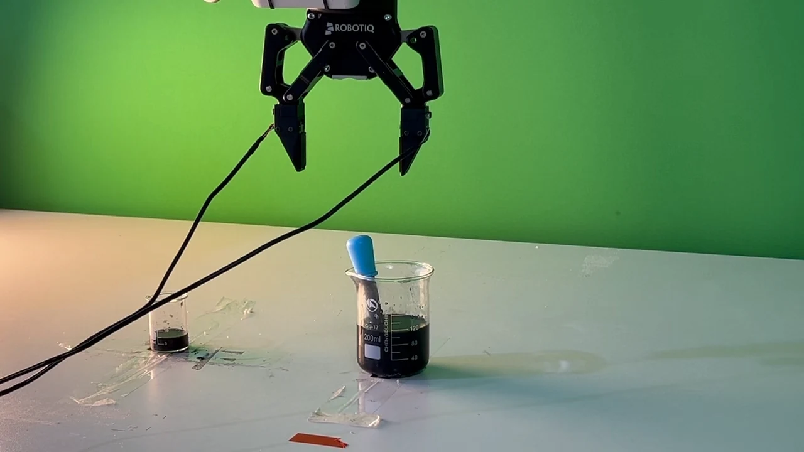
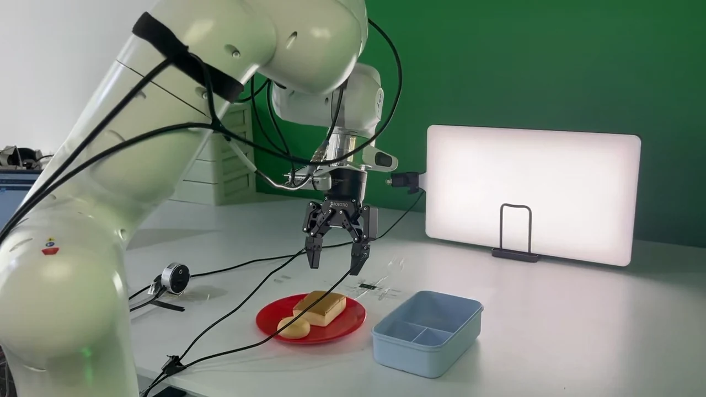
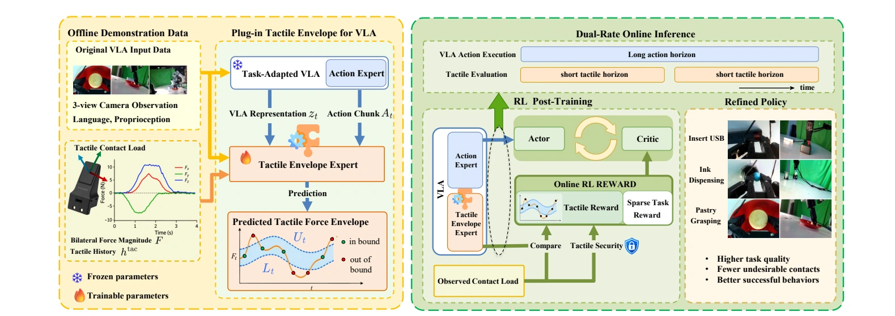
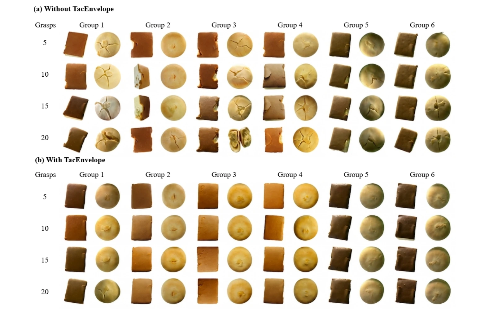

Learn from successful contact
Condition the expert on VLA representations, robot state, candidate actions, and causal tactile history. Predict short-horizon contact load and uncertainty.
ROBOT LEARNING / RESEARCH PROJECT · 2026
A Plug-in Framework for Utilizing Tactile Envelope
Feedback in RL Post-Training of VLA Policies
Learning how contact should feel.
Adaptive tactile feedback helps vision-language-action policies
learn more precise, efficient, and gentle physical interactions.
† Corresponding authors

01 / PRECISIONUSB insertion
02 / CONTROLInk dispensing
03 / GENTLENESSPastry graspingOne plug-in. Two RL backends. Three real-world contact regimes.
01 / THE IDEA
Completing a task tells us little about how a robot handled the physical interaction.
TacEnvelope learns an action-conditioned reference for contact load from successful demonstrations. A compact tactile envelope expert predicts a calibrated force range that changes with the ongoing interaction.
During online reinforcement learning, deviations from that envelope become dense tactile feedback. The framework complements sparse task rewards and plugs into existing VLA post-training pipelines.
Read the full paper02 / IN ACTION
03 / HOW IT WORKS
The task-adapted VLA supplies the context.
The envelope expert evaluates the contact.

Condition the expert on VLA representations, robot state, candidate actions, and causal tactile history. Predict short-horizon contact load and uncertainty.
Use held-out calibration episodes to construct uncertainty-scaled lower and upper force bounds. Envelope width adapts to the input.
Compare observed contact with each local envelope. Add the resulting tactile reward to the online RL objective used by RLT or DSRL.
A 30 Hz robot controller executes 18 steps per RL transition (0.6 s). Tactile evaluation runs over 9-step windows (0.3 s), providing two assessments during each transition.
↗04 / REAL-WORLD RESULTS
Comparing RLT with RLT + TacEnvelope on the same task.
USB INSERTION SUCCESS
USB COMPLETION TIME
INK VOLUME ERROR
PASTRY PRESERVATION
Baseline With TacEnvelope
| Task | Method | Success ↑ | Quality metric |
|---|---|---|---|
| USB insertion | π0.5 | 60% | 16 s completion time ↓ |
| RLT | 72.5% | 19 s | |
| RLT + TacEnvelope | 85% | 12 s | |
| DSRL | 87.5% | 20 s | |
| DSRL + TacEnvelope | 95% | 13 s | |
| Ink dispensing | π0.5 | 60% | 5 mL accumulated error ↓ |
| RLT | 90% | 3 mL | |
| RLT + TacEnvelope | 95% | 2 mL | |
| DSRL | 85% | 5 mL | |
| DSRL + TacEnvelope | 95% | 2 mL | |
| Pastry grasping | RLT | — | 2.0 / 6 preservation ↑ |
| RLT + TacEnvelope | — | 4.0 / 6 | |
| DSRL | — | 2.4 / 6 | |
| DSRL + TacEnvelope | — | 3.8 / 6 |
USB: 40 evaluation trials per method. Completion time is averaged over successful trials.
Ink: 5 mL target per operation. Quality is the sum of absolute volume errors across 10 consecutive operations, averaged over four trials. An operation succeeds within ±1 mL of the target.
Pastry: Mean combined preservation score for two pastry types after 20 grasp-and-transfer cycles, evaluated over five independent trials. The score ranges from 0 to 6.
05 / CONTACT IN THE REAL WORLD
Three tasks on a real Franka arm test different demands on physical contact.
Constrained insertion requires controlled interaction with a tight-fitting port. We measure insertion success and completion time.
Dispense a target of 5 mL in each operation. We measure success and accumulated absolute volume error.
Repeat 20 grasp-and-transfer cycles with two pastry types. We measure how well each pastry keeps its physical structure.
PRESERVATION OVER REPEATED GRASPS
Representative results after 5, 10, 15, and 20 grasp-and-transfer cycles, shown with and without TacEnvelope.
Groups 1–2: task-adapted π0.5.
Groups 3–4: RLT. Groups 5–6: DSRL.
See Figure 9 for the full comparison.

06 / EXPLORE THE WORK
Code, pretrained envelope experts,
and the complete project video.
Method, implementation details, real-world evaluation, and ablations.
CODE / APACHE 2.0Envelope prediction, calibration, online RL integration, and task experts.
VIDEO / MP4Download the complete video and see the three tasks in action.
@misc{hu2026tacenvelope,
title = {TacEnvelope: A Plug-in Framework for Utilizing Tactile
Envelope Feedback in RL Post-Training of VLA Policies},
author = {Hu, Huanzhang and Chen, Bo and Yu, Fangdi and
Zhang, Haoyi and Lai, Xianxin and Chen, Jiahui and
Chen, Haijier and Sun, Xiaoquan and Zheng, Dongchen and
Hong, Yijun and Chen, Zurui and Ge, Wenqi and Chen, Jiayu},
year = {2026},
url = {https://agentic-intelligence-lab.org/files/TacEnvelope.pdf}
}